Columnas
Permisos
Acceso denegado
Tu rol no permite acceder a esta sección. Selecciona una opción disponible en el menú.
Control de inventario
Inventario de activos
{{ assets.length }}Activos totales
{{ assignedCount }}Con responsable
{{ remoteCount }}Acceso remoto
{{ sites.length }}Sedes registradas
|
Activo
|
Tipo y modelo | Sede y ubicación | Responsable | Dirección IP | Acceso remoto |
|---|---|---|---|---|---|
|
|
{{ asset.type }} {{ asset.brand }} {{ asset.model }} | {{ siteLabel(asset.site) }} {{ locationLabel(asset) }} | {{ assigneeLabel(asset) }} Sin responsable | {{ asset.ip }} — |
|

No hay activos con estos filtros
Ajusta la búsqueda o los filtros.
Directorio
Personas
Responsables de activos y datos de contacto.
{{ people.length }}Personas registradas
{{ activePeopleCount() }}Personas activas
{{ peopleWithAssetsCount() }}Con activos asignados
{{ departments.length }}Departamentos
| Persona | Cargo | Departamento | Sede | Activos | Estado | Acciones |
|---|---|---|---|---|---|---|
|
{{ person.name }}
{{ person.email || 'Sin correo' }}
|
{{ person.role || 'Sin cargo' }} | {{ departmentLabel(person.departmentId) }} | {{ personSiteLabel(person.siteId) }} | {{ personAssetCount(person.id) }} | {{ personStatusLabel(person) }} |
|
No hay personas con estos filtros
Ajusta la búsqueda o crea una persona nueva.
{{ departmentLabel(currentPerson.departmentId) }}
{{ personStatusLabel(currentPerson) }}
{{ currentPerson.name }}
{{ currentPerson.role || 'Sin cargo definido' }} · {{ personSiteLabel(currentPerson.siteId) }}
Contacto
Datos de la persona
- Correo
- {{ currentPerson.email }}Sin correo
- Teléfono
- {{ currentPerson.phone }}Sin teléfono
- Departamento
- {{ departmentLabel(currentPerson.departmentId) }}
- Sede
- {{ personSiteLabel(currentPerson.siteId) }}
- Activos asignados
- {{ personAssets.length }} {{ personAssets.length === 1 ? 'activo' : 'activos' }}
Equipos
Activos a su cargo
| Activo | Tipo | Sede | IP | Acciones |
|---|---|---|---|---|
| {{ asset.name }} {{ asset.id }} | {{ asset.type }} | {{ siteLabel(asset.site) }}{{ locationLabel(asset) }} | {{ asset.ip || '—' }} |
|
Sin activos asignados
Asigna un activo sin responsable para vincularlo a esta persona.
Ajustes del espacio
Configuración
Identidad, catálogo, equipo e integraciones.
Identidad
Identidad y marca
El nombre y el logotipo se muestran en el acceso y en la navegación.
Vista previa
{{ generalDraft.appName || 'Asset Manager' }}
{{ generalDraft.organizationName || 'Operaciones TI' }}
Activa
Catálogo
Categorías de activos
Agrupa los equipos y define la imagen genérica de cada grupo.
{{ category.label }}
{{ categoryCount(category.id) }} {{ categoryCount(category.id) === 1 ? 'activo' : 'activos' }}
{{ category.description || 'Sin descripción.' }}
Sin categorías
Crea la primera categoría para organizar el inventario.
Estructura física
Sedes y ubicaciones
Organiza el inventario por sede y detalla las ubicaciones internas.
{{ site.label }}
{{ site.locations.length }} {{ site.locations.length === 1 ? 'ubicación' : 'ubicaciones' }} · {{ siteAssetCount(site.id) }} {{ siteAssetCount(site.id) === 1 ? 'activo' : 'activos' }}
Sin ubicaciones todavía.
Sin sedes
Crea una sede para asignar activos y ubicaciones.
Equipo
Personas y departamentos
Organiza el directorio por área. Los datos personales se editan en cada ficha.
{{ people.length }} {{ people.length === 1 ? 'persona' : 'personas' }}
{{ activePeopleCount() }} {{ activePeopleCount() === 1 ? 'activa' : 'activas' }}
{{ departments.length }} {{ departments.length === 1 ? 'departamento' : 'departamentos' }}
{{ department.label }}
{{ departmentPeopleCount(department.id) }} {{ departmentPeopleCount(department.id) === 1 ? 'persona' : 'personas' }}
Sin departamentos
Crea el primer departamento para organizar al equipo.
Conectividad
Integraciones
Activa solo las herramientas disponibles para el equipo.
{{ categoryLabel(currentAsset.category) }}
{{ currentAsset.status }}
Baja conservada
{{ currentAsset.name }}
{{ currentAsset.brand }} {{ currentAsset.model }} {{ currentAsset.id }} {{ currentAsset.code }}
Representación
{{ currentAsset.hasOwnImage ? 'Imagen propia del activo' : 'Imagen genérica de categoría' }}
{{ categoryLabel(currentAsset.category) }}
Ficha
Información del activo
Identificación
- Nombre
- {{ currentAsset.name }}
- ID permanente
- {{ currentAsset.id }}
- Código rápido
- {{ currentAsset.code }}
- Categoría
- {{ categoryLabel(currentAsset.category) }}
- Tipo
- {{ currentAsset.type }}
- Marca
- {{ currentAsset.brand || '—' }}
- Modelo
- {{ currentAsset.model || '—' }}
- Número de serie
- {{ currentAsset.serial || '—' }}
Estado y garantía
- Estado
- {{ currentAsset.status }}
- Garantía
- {{ assetWarrantyState(currentAsset).label }} {{ currentAsset.warranty.provider }}
- Alta en el inventario
- {{ assetDate(currentAsset.createdAt) }}
- Última actualización
- {{ currentAsset.updatedAt ? assetDateTime(currentAsset.updatedAt) : 'Sin cambios registrados' }}
Red
- Dirección IP
- {{ currentAsset.ip || 'No registrada' }}
Ubicación y asignación
- Sede o sucursal
- {{ siteLabel(currentAsset.site) }}
- Responsable
- {{ assigneePerson(currentAsset).name }} {{ assigneeLabel(currentAsset) }} Sin asignar
- Ubicación
- {{ locationLabel(currentAsset) }}
Información económica
- Coste
- {{ formatCurrency(currentAsset.cost) }}
Campos técnicos
- {{ field.label }}
- {{ assetFieldValue(currentAsset, field) }}
Ficha incompleta
Faltan {{ assetGaps(currentAsset).length }} datos: {{ assetGaps(currentAsset).join(', ') }}.
Conectividad
Acceso remoto
AnyDesk
Escritorio remoto
- Identificador
- {{ currentAsset.anydeskId }}
- Plataforma
- {{ settings.anydeskUrl }}
Tactical RMM
Gestión de agentes
- Agente
- {{ currentAsset.rmmAgentId }}
- Estado
- {{ currentAsset.rmmOnline ? 'Agente conectado' : 'Agente sin conexión' }}
Ciclo de vida
Conservación y eliminación
La baja conserva el registro
La baja se registra como movimiento: la ficha, sus adjuntos y el historial completo se mantienen, y el activo puede restaurarse.
Los activos relacionados no se modifican al dar de baja un equipo.
Eliminación definitiva
{{ assetAdmin.operations.mode === 'production' ? 'En producción exige escribir el ID permanente y el motivo de la eliminación.' : 'En desarrollo se confirma con un solo paso. Cambia el modo en Configuración para protegerla.' }}
Requiere permiso de edición de activos.